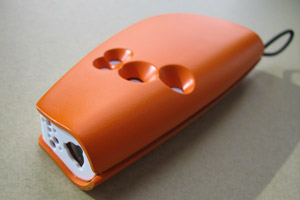
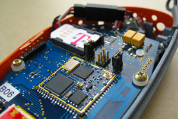
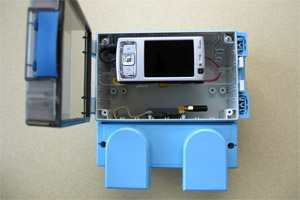
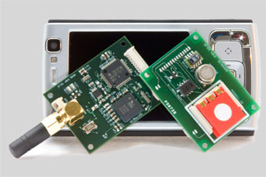
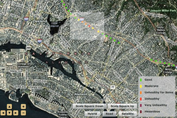
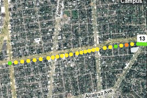

Technology
An increasing number of mobile devices have the potential to become personal environmental sensors. To explore this potential, we are developing research prototypes that can collect environmental data. Currently, we are focusing our efforts on air quality measurements. Our prototypes can be carried by individuals or placed on community vehicles such as street sweepers. We are also developing research software to allow people to share and analyze the data that has been collected.
Handheld Device
 We have developed a handheld device with a custom board that has carbon monoxide, ozone, NOx, temperature, and humidity sensors. This board is based on the EPIC mote platform. The handheld device also has a GPS/GPRS module so it can collect GPS data and upload all sensor data to our servers in real-time. It also includes a Bluetooth module so it can connect to the user’s own mobile phone. The handheld device is typically attached to a bag, backpack, or belt-loop.
Vehicular Platform
 We have developed a vehicular platform that is optimized for the particular challenges of municipal vehicles such as street sweepers. This system includes commodity mobile phones that connect to custom boards: one board has carbon monoxide, ozone, NOx, temperature, and humidity sensors, while the other board contains the remaining electronics. This split-board design allows us to isolate most of the electronics from exposure to the environment. The mobile phones receive the data from the boards and send the data to our servers.
Visualization and Discussion Software
 We are developing Web-based and mobile applications which will provide live and historical data from sensing deployments. We are developing visualization tools and online community features to allow people to explore and discuss the data and develop strategies for practical action.